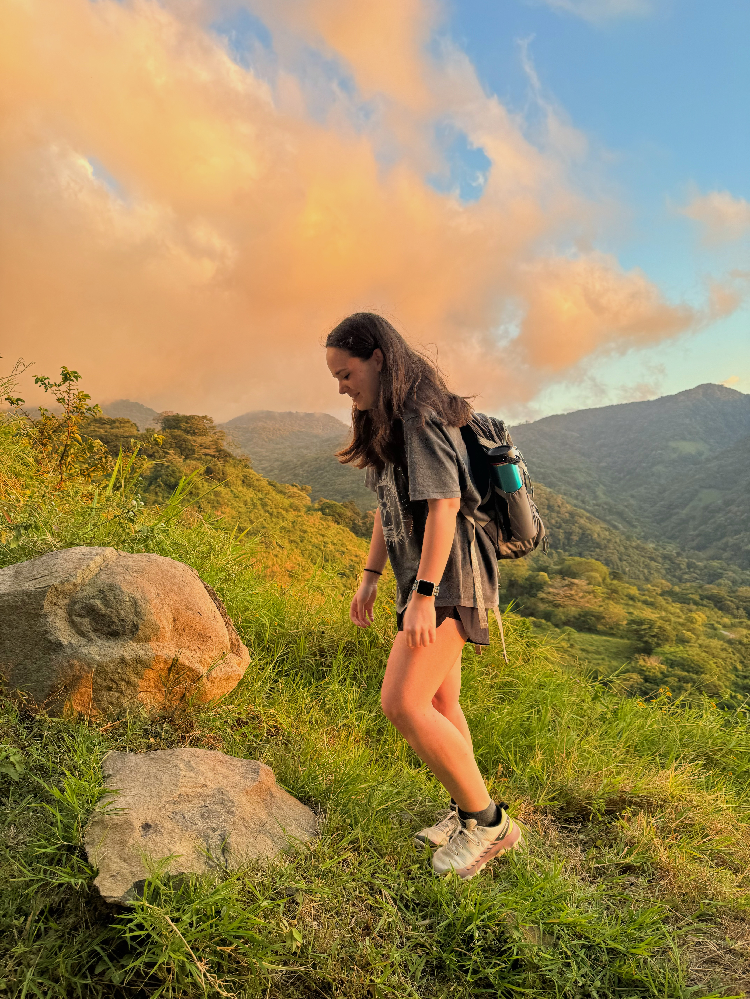
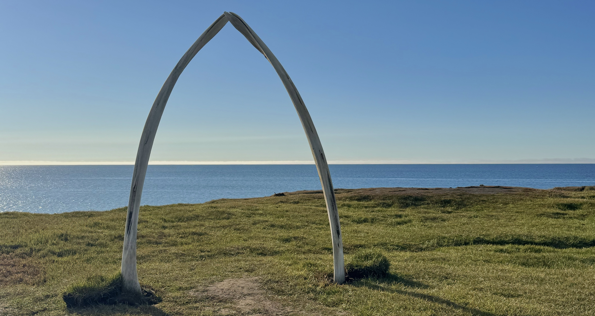

Welcome!

Hello, I’m Jaida! I am passionate about exploring how climate change is impacting how ecosystems function, especially in remote environments such as the Arctic. Specifically, I am interested in how we can use multi-scale remote sensing (i.e., satellites, drones, and tower-based cameras) connected with in-situ ground measurements to better understand how coastal areas are changing over time. I have conducted fieldwork in environments ranging from the forested ephemeral wetlands of coastal South Carolina to the polygonal tundra of Utqiaġvik, Alaska, and find immense value in developing creative, effective, and accessible science communication strategies beyond my research to help bring science to the doorsteps of the public. I am currently finishing up my M.S. in Climate and Society at Clark University and work as a Littoral Science and Remote Sensing Assistant Researcher at Computational Physics, Inc. Outside of academics and research, I enjoy running, playing pick-up soccer, hiking, wildlife photography, and reading! Two of my favorite authors are Peter Wohlleben and Richards Powers, check out my current read here!
